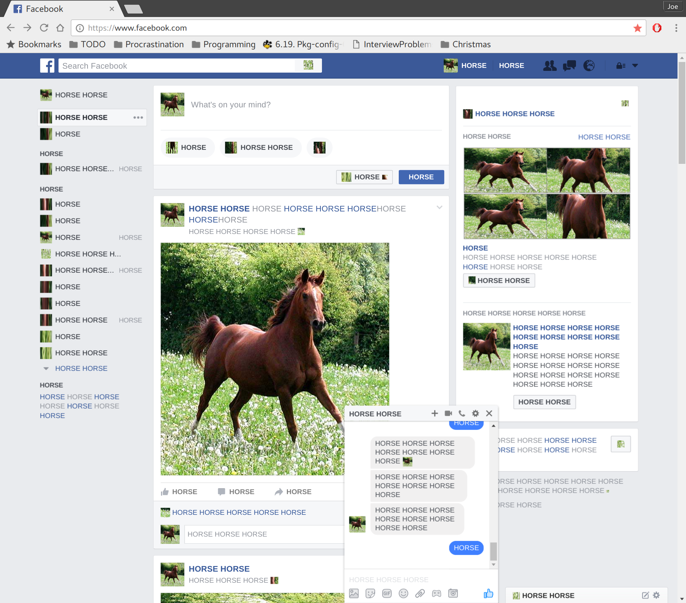

This rather opaque code snippet:
javascript: setInterval(function(){
function d(e) {
var c = e.childNodes;
for(var i = 0; i < c.length; i++) {
if (c[i].nodeType == 3) {
c[i].nodeValue = c[i].nodeValue.replace(/[^\s]+/g, "HORSE");
} else if (c[i].nodeType == 1 && c[i].tagName == "IMG") {
var cs = window.getComputedStyle(c[i]);
var x = cs.width, y = cs.height;
c[i].src = "http://bit.ly/vcrd56";
c[i].style.width = x;
c[i].style.height = y;
} else if (c[i].nodeType == 1 && c[i].tagName == "I") {
c[i].style.backgroundImage = "url('http://bit.ly/vcrd56')";
} else {
d(c[i]);
}
}
}
d(document.body);
}, 1000);
when pasted into the address bar on Facebook, achieves something beautiful:

I offer no justification for this script, but thank my cousin Tom for the inspiration.